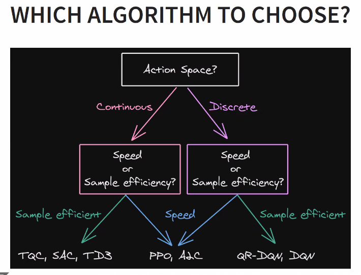
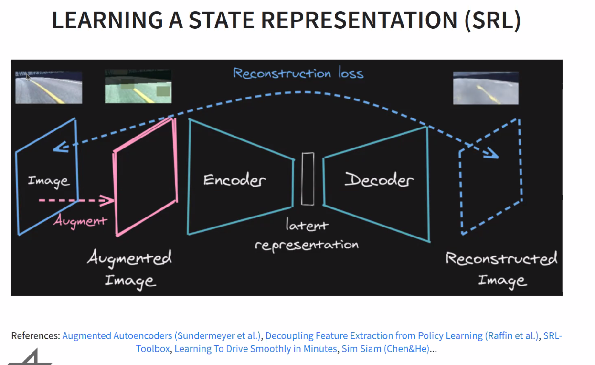

Schedule is
RLVS schedule
This condensed schedule does not include class breaks and social events. Times are Central European Summer Time (UTC+2).
(4/1/21) - Deep Q-Networks and its variants
Speaker is Bilal Piot.
Deep Q network as a solution for a practicable control theory.
Introduction of ALE (Atari Learning Environment)
DQN is (almost) end-to-end: from raw observations to actions. Bilal explains the preprocessing part (from 160x210x3 to 84x84 + stacking 4 frames + downsampling to 15 Hz)
Value Iteration (VI) algorithm: Recurrent algorithm to get Q. \(Q_{k+1}=T^*Q\)
But it is not practical in a real-world case. What we can do is use interactions with real world. And estimate \(Q^*\) using a regression.
Would be interesting to have slides. I like the link between regression notations and VI notation.
From neural Fitted-\(Q\) to DQN. Main difference is data collection (in DQN you have updated interactions and it allows exploration, and size of architecture)
With DQN we have acting part and learning part. Acting is the data collection. (using \(\epsilon\)-greedy policy)
hands-on based on DQN tutorial notebook.
had to export LD_LIBRARY_PATH=/home/explore/miniconda3/envs/aniti/lib/
Nice introduction to JAX and haiku. Haiku is similar modules in pytorch and can turn NN into pure version. Which is useful for Jax.
overview of the literature

(4/2/21) - From Policy Gradients to Actor Critic methods
Olivier Sigaud is the speaker.
He has pre-recorded his lecture in videos. I have missed the start so I will have to watch them later.
Don’t become an alchemist ;)
As stochastic policies, squashed gaussian is interesting because it allows continuous variable + bounds.
(4/8/21) - Evolutionary Reinforcement Learning
pdf version of the slides are available here
then Evolving Agents that Learn More Like Animals
This morning was more about what we can do when we have infinite calculation power and data.
Afternoon will be the opposite.
(4/8/21) - Micro-data Policy Search
Most policy search algorithms require thousands of training episodes to find an effective policy, which is often infeasible when experiments takes time or are expensive (for instance, with physical robot or with an aerodynamics simulator). This class focuses on the extreme other end of the spectrum: how can an algorithm adapt a policy with only a handful of trials (a dozen) and a few minutes? By analogy with the word “big-data”, we refer to this challenge as “micro-data reinforcement learning”. We will describe two main strategies: (1) leverage prior knowledge on the policy structure (e.g., dynamic movement primitives), on the policy parameters (e.g., demonstrations), or on the dynamics (e.g., simulators), and (2) create data-driven surrogate models of the expected reward (e.g., Bayesian optimization) or the dynamical model (e.g., model-based policy search), so that the policy optimizer queries the model instead of the real system. Most of the examples will be about robotic systems, but the principle apply to any other expensive setup.
all material: https://rl-vs.github.io/rlvs2021/micro-data.html
(4/9/21) - RL in Practice: Tips and Tricks and Practical Session With Stable-Baselines3
Abstract: The aim of the session is to help you do reinforcement learning experiments. The first part covers general advice about RL, tips and tricks and details three examples where RL was applied on real robots. The second part will be a practical session using the Stable-Baselines3 library.
Pre-requisites: Python programming, RL basics, (recommended: Google account for the practical session in order to use Google Colab).
Additional material: Website: https://github.com/DLR-RM/stable-baselines3 Doc: https://stable-baselines3.readthedocs.io/en/master/
Outline: Part I: RL Tips and Tricks / The Challenges of Applying RL to Real Robots
- Introduction (3 minutes)
- RL Tips and tricks (45 minutes)
- General Nuts and Bolts of RL experimentation (10 minutes)
- RL in practice on a custom task (custom environment) (30 minutes)
- Questions? (5 minutes)
- The Challenges of Applying RL to Real Robots (45 minutes)
- Learning to control an elastic robot - DLR David Neck Example (15 minutes)
- Learning to drive in minutes and learning to race in hours - Virtual and real racing car (15 minutes)
- Learning to walk with an elastic quadruped robot - DLR bert example (10 minutes)
- Questions? (5 minutes+)
Part II: Practical Session with Stable-Baselines3
- Stable-Baselines3 Overview (20 minutes)
- Questions? (5 minutes)
- Practical Session - Code along (1h+)
action space
When using continuous space, you need to normalize! (normalized action space -1, -1)
there is a checker for that in stable baselines 3.
reward
start with reward shaping.
termination condition
early stopping makes learning faster (and safer for robots)

for hyperparameter tuning, Antonin recommends Optuna.
about the Henderson paper: Deep Reinforcement Learning that Matters

and then the controller will use latent representation / current speed + history as observation space.
Learning to drive takes then 10 min, and to race 2 hours.
handson
slides: https://araffin.github.io/slides/rlvs-sb3-handson/
notebook: https://github.com/araffin/rl-handson-rlvs21
RL zoo: https://github.com/DLR-RM/rl-baselines3-zoo
documentation for SB3 usefull for completing exercises: https://stable-baselines3.readthedocs.io/en/master/